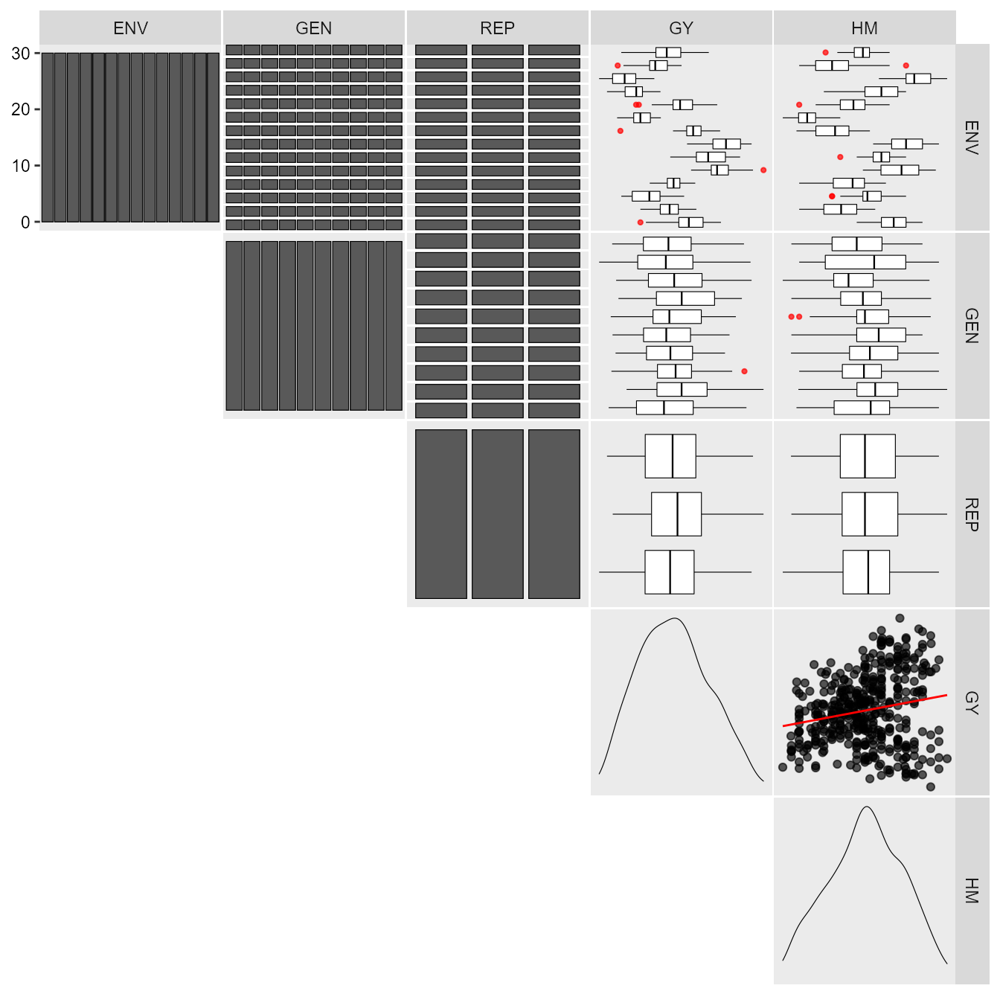
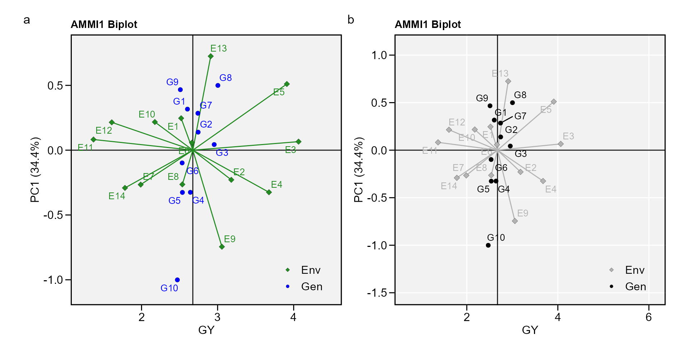
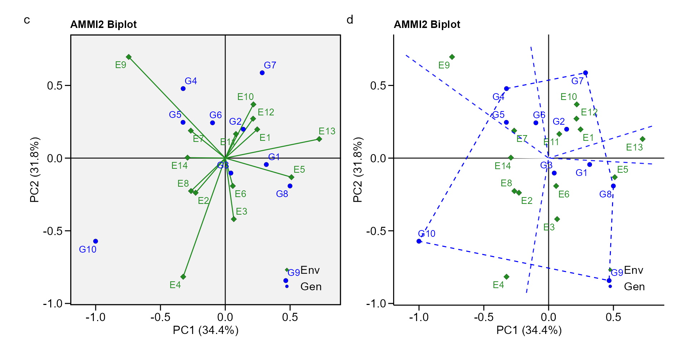
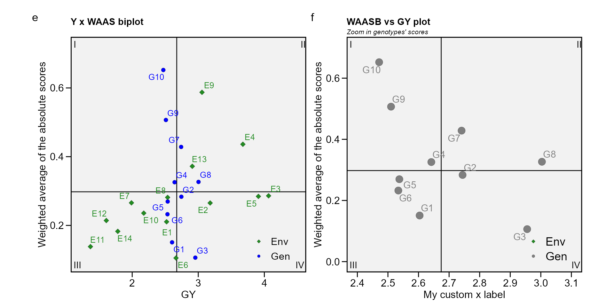
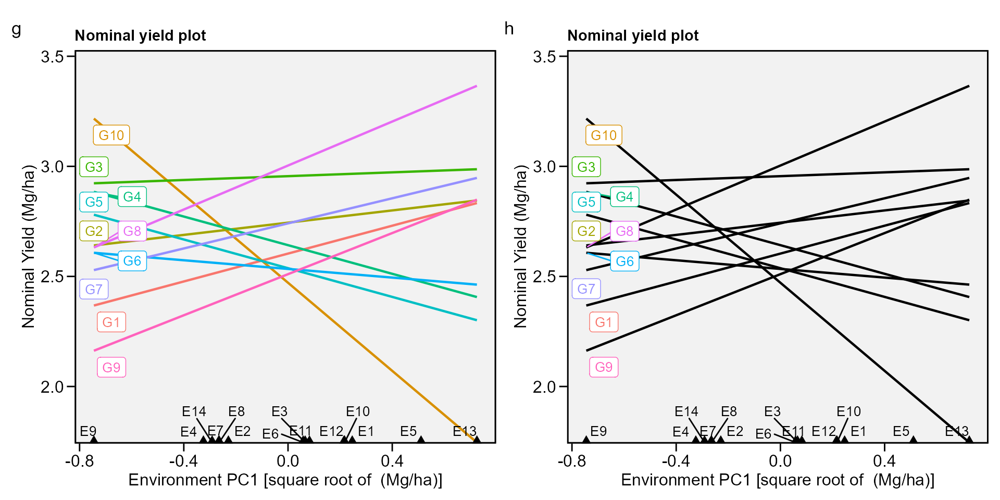
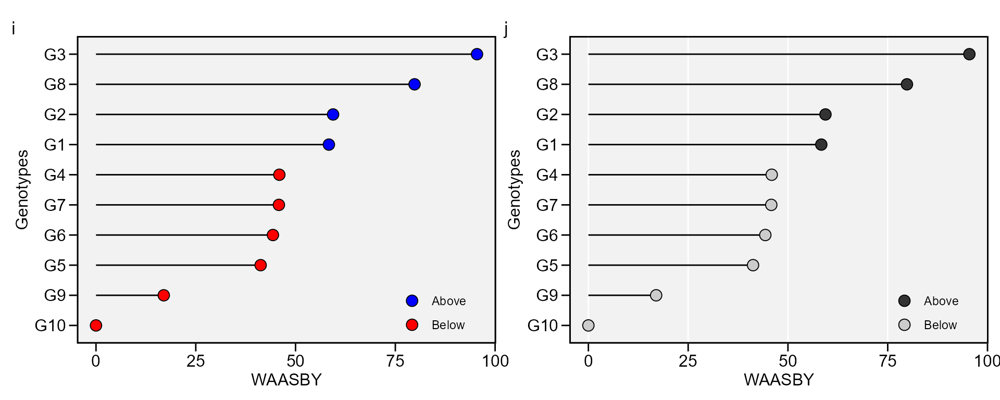
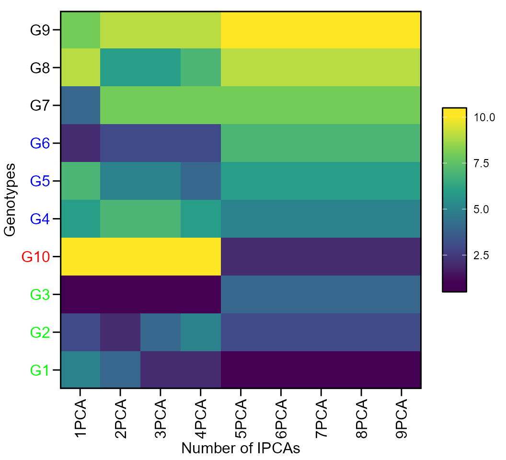
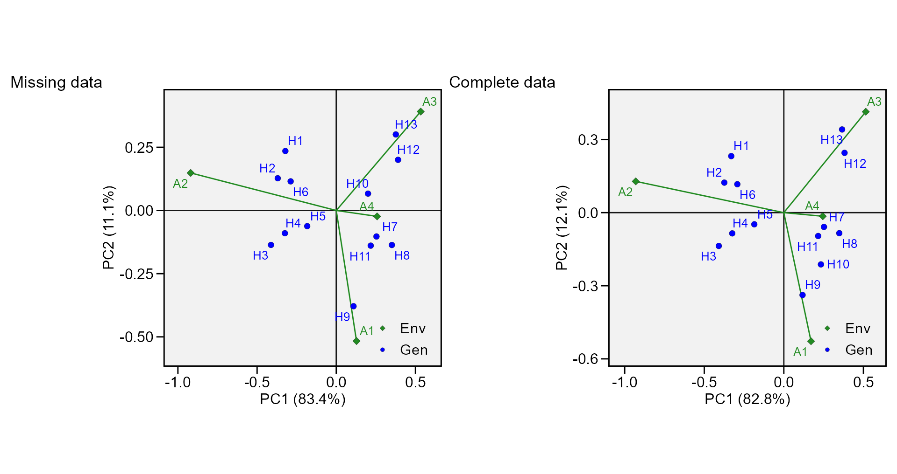

Analyzing multienvironment trials using AMMI
Tiago Olivoto
2024-11-20
Source:vignettes/vignettes_ammi.Rmd
vignettes_ammi.RmdGetting started
In this section, we will use the data in data_ge. For
more information, please, see ?data_ge. Other data sets can
be used provided that the following columns are in the dataset:
environment, genotype, block/replicate and response variable(s). See the
section Rendering engine to know how HTML
tables were generated.
The first step is to inspect the data with the function
inspect().

print_table(insp)Individual and joint ANOVA
It is suggested to check if genotype-vs-environment interaction is
significant before proceeding with the AMMI analysis. A
within-environment ANOVA considering a fixed-effect model is computed
with the function anova_ind(). For each environment the
Mean Squares for block, genotypes and error are shown. Estimated F-value
and the probability error are also shown for block and genotype effects.
Some measures of experimental precision are calculated, namely,
coefficient of variation,
;
the heritability,
,
and the accuracy of selection,
.
indiv <- anova_ind(data_ge, ENV, GEN, REP, GY)
# Evaluating trait GY |============================================| 100% 00:00:00
print_table(indiv$GY$individual)The joint ANOVA is performed with the function
anova_joint().
library(metan)
joint <- anova_joint(data_ge, ENV, GEN, REP, GY, verbose = FALSE)
print_table(joint$GY$anova)The genotype-vs-environment interaction was highly significant. So we’ll proceed with the AMMI analysis.
The AMMI model
The estimate of the response variable for the ith genotype in the jth environment using The Additive Main Effect and Multiplicative interaction (AMMI) model, is given as follows:
where is the singular value for the k-th interaction principal component axis (IPCA); is the i-th element of the k-th eigenvector; is the jth element of the kth eigenvector. A residual remains, if not all p IPCA are used, where .
The AMMI model is fitted with the performs_ammi()
function. The first argument is the data, in our example
data_ge. The second argument (resp) is the
response variable to be analyzed. The function allow a single variable
(in this case GY) or a vector of response variables. The arguments
(gen, env, and rep) are the name
of the columns that contains the levels for genotypes, environments, and
replications, respectively. The last argument (verbose)
control if the code will run silently.
AMMI_model <- performs_ammi(data_ge,
env = ENV,
gen = GEN,
rep = REP,
resp = GY,
verbose = FALSE)Note that using the arguments in the correct order, the model above may be fitted cleanly with:
AMMI_model <- performs_ammi(data_ge, ENV, GEN, REP, GY, verbose = FALSE)The AMMI table
The following comand creates the well-known ANOVA table for the AMMI model. Note that since
AMMI_model
# Variable GY
# ---------------------------------------------------------------------------
# AMMI analysis table
# ---------------------------------------------------------------------------
# Source Df Sum Sq Mean Sq F value Pr(>F) Proportion
# 1 ENV 13 279.573552 21.50565785 62.325457 0.000000e+00 NA
# 2 REP(ENV) 28 9.661516 0.34505416 3.568548 3.593191e-08 NA
# 3 GEN 9 12.995044 1.44389374 14.932741 2.190118e-19 NA
# 4 GEN:ENV 117 31.219565 0.26683389 2.759595 1.005191e-11 NA
# 5 PC1 21 10.749140 0.51186000 5.290000 0.000000e+00 34.4
# 6 PC2 19 9.923920 0.52231000 5.400000 0.000000e+00 31.8
# 7 PC3 17 4.039180 0.23760000 2.460000 1.400000e-03 12.9
# 8 PC4 15 3.073770 0.20492000 2.120000 9.600000e-03 9.8
# 9 PC5 13 1.446440 0.11126000 1.150000 3.176000e-01 4.6
# 10 PC6 11 0.932240 0.08475000 0.880000 5.606000e-01 3.0
# 11 PC7 9 0.566700 0.06297000 0.650000 7.535000e-01 1.8
# 12 PC8 7 0.362320 0.05176000 0.540000 8.037000e-01 1.2
# 13 PC9 5 0.125860 0.02517000 0.260000 9.345000e-01 0.4
# 14 Residuals 252 24.366674 0.09669315 NA NA NA
# 15 Total 536 389.035920 0.72581328 NA NA NA
# Accumulated
# 1 NA
# 2 NA
# 3 NA
# 4 NA
# 5 34.4
# 6 66.2
# 7 79.2
# 8 89.0
# 9 93.6
# 10 96.6
# 11 98.4
# 12 99.6
# 13 100.0
# 14 NA
# 15 NA
# ---------------------------------------------------------------------------
# Scores for genotypes and environments
# ---------------------------------------------------------------------------
# # A tibble: 24 × 12
# type Code Y PC1 PC2 PC3 PC4 PC5 PC6
# <chr> <chr> <dbl> <dbl> <dbl> <dbl> <dbl> <dbl> <dbl>
# 1 GEN G1 2.604 0.3166 -0.04417 -0.03600 -0.06595 -0.3125 -0.4272
# 2 GEN G10 2.471 -1.001 -0.5718 -0.1652 -0.3309 -0.1243 0.1064
# 3 GEN G2 2.744 0.1390 0.1988 -0.7331 0.4735 -0.04816 0.2841
# 4 GEN G3 2.955 0.04340 -0.1028 0.2284 0.1769 -0.1270 0.1400
# 5 GEN G4 2.642 -0.3251 0.4782 -0.09073 0.1417 -0.1924 -0.3550
# 6 GEN G5 2.537 -0.3260 0.2461 0.2452 0.1794 0.4662 -0.03315
# 7 GEN G6 2.534 -0.09836 0.2429 0.5607 0.2377 0.05094 0.1011
# 8 GEN G7 2.741 0.2849 0.5871 -0.2068 -0.7085 0.2315 0.08406
# 9 GEN G8 3.004 0.4995 -0.1916 0.3191 -0.1676 -0.3261 0.2886
# 10 GEN G9 2.510 0.4668 -0.8427 -0.1217 0.06385 0.3819 -0.1889
# # ℹ 14 more rows
# # ℹ 3 more variables: PC7 <dbl>, PC8 <dbl>, PC9 <dbl>Nine interaction principal component axis (IPCA) were fitted and four were significant at 5% probability error. Based on this result, the AMMI4 model would be the best model to predict the yielding of the genotypes in the studied environments.
Estimating the response variable based on significant IPCA axes
The response variable of a two-way table (for example, the yield of
m genotypes in n environments) may be estimated using
the S3 method predict() applyed to an object of class
waas. This estimation is based on the number of
multiplicative terms declared in the function. If
naxis = 1, the AMMI1 (with one multiplicative term) is used
for estimating the response variable. If
naxis = min(g - 1; e - 1), the AMMIF is fitted. A summary
of all possible AMMI models is presented below.
| Member of AMMI family | Espected response of the i-th genotype in the jth environment |
|---|---|
| AMMI0 | |
| AMMI1 | |
| AMMI2 | |
| … | |
| AMMIF |
Procedures based on postdictive success, such as Gollobs’s test (Gollob 1968) or
predictive success, such as cross-validation (Piepho 1994) should be used to define
the number of IPCA used for estimating the response variable in AMMI
analysis. This package provides both. The waas() function
compute traditional AMMI analysis showing the number of significant axes
according to Gollobs’s test. On the other hand, cv_ammif()
function provides cross-validation of AMMI-model family, considering a
completely randomized design (CRD) or a randomized complete block design
(RCBD).
predicted <- predict(AMMI_model, naxis = 4)
print_table(predicted)The following values are presented: ENV is the environment; GEN is the genotype; Y is the response variable; resOLS is the residual () estimated by the Ordinary Least Square (OLS), where ; Ypred is the predicted value by OLS (); ResAMMI is the residual estimated by the AMMI model () considering the number of multiplicative terms informed in the function (in this case 5), where ; YpredAMMI is the predicted value by AMMI model ; and AMMI0 is the predicted value when no multiplicative terms are used, i.e., .
Estimating the WAAS index
The waas() function computes the Weighted Average of
Absolute Scores (Olivoto, Lúcio, Da silva, Marchioro, et al.
2019) considering (i) all principal component axes that were
significant
(
by default); or (ii) declaring a specific number of axes to be used,
according to the following equation:
where is the weighted average of absolute scores of the ith genotype; is the score of the ith genotype in the kth IPCA; and is the explained variance of the kth IPCA for , considering p the number of significant PCAs, or a declared number of PCAs. The following functions may be used to do that.
waas_index <- waas(data_ge, ENV, GEN, REP, GY, verbose = FALSE)Number of axes based on F-test
In this example only IPCAs with P-value < 0.05 will be
considered in the WAAS estimation. This is the default setting and the
model was already fitted and stored into
AMMI_model>GY>model.
print_table(waas_index$GY$model)The output generated by the waas() function shows the
following results: type, genotype (GEN) or environment
(ENV); Code, the code attributed to each level of the
factors; Y, the response variable (in this case the
grain yield); WAAS the weighted average of the absolute
scores, estimated with all PCA axes with P-value
0.05; PctWAAS and PctResp that are the
percentage values for the WAAS and Y, respectively;
OrResp and OrWAAS that are the ranks
attributed to the genotype and environment regarding the Y or WAAS,
respectively; WAASY is the weighted average of absolute
scores and response variable. In this case, considering equal weights
for PctResp and PctWAAS, the WAASY for G1 is estimated by:
.
Then the OrWAASY is the rank for the WAASY value. The
genotype (or environment) with the largest WAASY value has the first
ranked.
Number of axes declared manually
The second option to compute the WAAS is by manually declaring a
specific number of multiplicative terms. In this case, the number of
terms declared is used independently of its significance. Let us, for
the moment, assume that after a cross-validation procedure the AMMI7 was
the most predictively accurate AMMI model and the researcher will use
this model. The additional argument naxis in the function
waas is then used to overwrite the default chose of
significant terms.
waas_index2 <- data_ge %>%
waas(ENV, GEN, REP, GY,
naxis = 7, # Use 7 IPCA for computing WAAS
verbose = FALSE)The only difference in this output is that here we declared that seven IPCA axes should be used for computing the WAAS value. Thus, only the values of WAAS, OrWAAS, WAASY and OrWAASY may have significant changes.
Biplots
Provided that an object of class waas or
performs_ammi is available in the global environment, the
graphics may be obtained using the function plot_scores().
To do that, we will revisit the previusly fitted model
AMMI_model . Please, refer to plot_scores()
for more details.
biplot type 1: GY x PC1
a <- plot_scores(AMMI_model)
b <- plot_scores(AMMI_model,
col.gen = "black",
col.env = "gray70",
col.segm.env = "gray70",
axis.expand = 1.5,
plot_theme = theme_metan(grid = "both"))
arrange_ggplot(a, b, tag_levels = "a")
biplot type 2: PC1 x PC2
- PC1 x PC2 By default, IPCA1 is shown in the x axis and IPCA2 in the y axis.
c <- plot_scores(AMMI_model, type = 2)
d <- plot_scores(AMMI_model,
type = 2,
polygon = T,
col.segm.env = "transparent",
plot_theme = theme_metan_minimal())
arrange_ggplot(c, d, tag_levels = list(c("c", "d")))
- Change the default option To create a biplot showin other IPCAs use
the arguments
firstandsecond. For example to produce a PC1 x PC3 biplot, usesecond = "PC3. A PC3 x PC4 biplot can be produced (provided that the model has at least four IPCAs) withfirst = "PC3"andsecond = "PC4"..
biplot type 3: GY x WAAS
The quadrants proposed by Olivoto, Lúcio, Da
silva, Marchioro, et al. (2019) in
the following biplot represent four classifications regarding the joint
interpretation of mean performance and stability. The genotypes or
environments included in quadrant I can be considered unstable genotypes
or environments with high discrimination ability, and with productivity
below the grand mean. In quadrant II are included unstable genotypes,
although with productivity above the grand mean. The environments
included in this quadrant deserve special attention since, in addition
to providing high magnitudes of the response variable, they present a
good discrimination ability. Genotypes within quadrant III have low
productivity, but can be considered stable due to the lower values of
WAASB. The lower this value, the more stable the genotype can be
considered. The environments included in this quadrant can be considered
as poorly productive and with low discrimination ability. The genotypes
within the quadrant IV are highly productive and broadly adapted due to
the high magnitude of the response variable and high stability
performance (lower values of WAASB). . To obtain this biplot must use an
object of class waas (in our example,
waas_index).
e <- plot_scores(waas_index, type = 3)
f <- plot_scores(waas_index,
type = 3,
x.lab = "My custom x label",
size.shape.gen = 4, # Size of the shape for genotypes
col.gen = "gray50", # Color for genotypes
size.tex.gen = 4, # Size of the text for genotypes
col.alpha.env = 0, # Transparency of environment's point
x.lim = c(2.4, 3.1), # Limits of x axis
x.breaks = seq(2.4, 3.1, by = 0.1), # Markers of x axis
y.lim = c(0, 0.7))+
ggplot2::ggtitle("WAASB vs GY plot", subtitle = "Zoom in genotypes' scores")
arrange_ggplot(e, f, tag_levels = list(c("e", "f")))
biplot type 4: nominal yield and environment IPCA1
g <- plot_scores(AMMI_model, type = 4)
h <- plot_scores(AMMI_model,
type = 4,
color = FALSE)
arrange_ggplot(g, h, tag_levels = list(c("g", "h")))
Simultaneous selection for mean performance and stability
The WAASY index (Olivoto, Lúcio, Da silva, Sari, et al. 2019) is used for genotype ranking considering both the stability (WAAS) and mean performance based on the following model:
where is the superiority index for the i-th genotype that weights between performance and stability; and are the rescaled values (0-100) for GY and WAASB, respectively; and are the weights for GY and WAASB, respectively.
This index was also already computed and stored into AMMI_model>GY>model. An intuitively plot may be obtained by running
i <- plot_waasby(waas_index)
j <- plot_waasby(waas_index,
col.shape = c("gray20", "gray80"),
plot_theme = theme_metan(grid = "x"))
arrange_ggplot(i, j, tag_levels = list(c("i", "j")))
The values of WAASY in the plot above were computed considering equal
weights for mean performance and stability. Different weights may be
assigned using the wresp argument of the
waas() function.
Weighting the stability and mean performance
After fitting a model with the functions waas() or
waasb() it is possible to compute the superiority indexes
WAASY or WAASBY in different scenarios of weights for stability and mean
performance. The number of scenarios is defined by the arguments
increment. By default, twenty-one different scenarios are
computed. In this case, the the superiority index is computed
considering the following weights: stability (waasb or waas) = 100; mean
performance = 0. In other words, only stability is considered for
genotype ranking. In the next iteration, the weights becomes 95/5 (since
increment = 5). In the third scenario, the weights become 90/10, and so
on up to these weights become 0/100. In the last iteration, the genotype
ranking for WAASY or WAASBY matches perfectly with the ranks of the
response variable.
WAASratio <- wsmp(waas_index)
# Ranks considering 0 for GY and 100 for WAASB | | 1% 00:00:00 Ranks considering 0 for GY and 100 for WAASB | | 1% 00:00:00 Ranks considering 0 for GY and 100 for WAASB | | 2% 00:00:00 Ranks considering 0 for GY and 100 for WAASB | | 2% 00:00:00 Ranks considering 0 for GY and 100 for WAASB |= | 3% 00:00:00 Ranks considering 0 for GY and 100 for WAASB |= | 3% 00:00:00 Ranks considering 0 for GY and 100 for WAASB |= | 4% 00:00:00 Ranks considering 0 for GY and 100 for WAASB |= | 4% 00:00:00 Ranks considering 0 for GY and 100 for WAASB |= | 5% 00:00:00 Ranks considering 5 for GY and 95 for WAASB |= | 5% 00:00:00 Ranks considering 5 for GY and 95 for WAASB |= | 6% 00:00:00 Ranks considering 5 for GY and 95 for WAASB |= | 6% 00:00:00 Ranks considering 5 for GY and 95 for WAASB |= | 7% 00:00:00 Ranks considering 5 for GY and 95 for WAASB |= | 7% 00:00:00 Ranks considering 5 for GY and 95 for WAASB |== | 8% 00:00:00 Ranks considering 5 for GY and 95 for WAASB |== | 8% 00:00:00 Ranks considering 5 for GY and 95 for WAASB |== | 9% 00:00:00 Ranks considering 5 for GY and 95 for WAASB |== | 10% 00:00:00 Ranks considering 10 for GY and 90 for WAASB |== | 10% 00:00:00 Ranks considering 10 for GY and 90 for WAASB |== | 11% 00:00:00 Ranks considering 10 for GY and 90 for WAASB |== | 11% 00:00:00 Ranks considering 10 for GY and 90 for WAASB |== | 12% 00:00:00 Ranks considering 10 for GY and 90 for WAASB |== | 12% 00:00:00 Ranks considering 10 for GY and 90 for WAASB |== | 13% 00:00:00 Ranks considering 10 for GY and 90 for WAASB |=== | 13% 00:00:00 Ranks considering 10 for GY and 90 for WAASB |=== | 14% 00:00:00 Ranks considering 10 for GY and 90 for WAASB |=== | 14% 00:00:00 Ranks considering 15 for GY and 85 for WAASB |=== | 15% 00:00:00 Ranks considering 15 for GY and 85 for WAASB |=== | 15% 00:00:00 Ranks considering 15 for GY and 85 for WAASB |=== | 16% 00:00:00 Ranks considering 15 for GY and 85 for WAASB |=== | 16% 00:00:00 Ranks considering 15 for GY and 85 for WAASB |=== | 17% 00:00:00 Ranks considering 15 for GY and 85 for WAASB |=== | 17% 00:00:00 Ranks considering 15 for GY and 85 for WAASB |=== | 18% 00:00:00 Ranks considering 15 for GY and 85 for WAASB |==== | 19% 00:00:00 Ranks considering 15 for GY and 85 for WAASB |==== | 19% 00:00:00 Ranks considering 20 for GY and 80 for WAASB |==== | 20% 00:00:00 Ranks considering 20 for GY and 80 for WAASB |==== | 20% 00:00:00 Ranks considering 20 for GY and 80 for WAASB |==== | 21% 00:00:00 Ranks considering 20 for GY and 80 for WAASB |==== | 21% 00:00:00 Ranks considering 20 for GY and 80 for WAASB |==== | 22% 00:00:00 Ranks considering 20 for GY and 80 for WAASB |==== | 22% 00:00:00 Ranks considering 20 for GY and 80 for WAASB |==== | 23% 00:00:00 Ranks considering 20 for GY and 80 for WAASB |==== | 23% 00:00:00 Ranks considering 20 for GY and 80 for WAASB |===== | 24% 00:00:00 Ranks considering 25 for GY and 75 for WAASB |===== | 24% 00:00:00 Ranks considering 25 for GY and 75 for WAASB |===== | 25% 00:00:00 Ranks considering 25 for GY and 75 for WAASB |===== | 25% 00:00:00 Ranks considering 25 for GY and 75 for WAASB |===== | 26% 00:00:00 Ranks considering 25 for GY and 75 for WAASB |===== | 26% 00:00:00 Ranks considering 25 for GY and 75 for WAASB |===== | 27% 00:00:00 Ranks considering 25 for GY and 75 for WAASB |===== | 28% 00:00:00 Ranks considering 25 for GY and 75 for WAASB |===== | 28% 00:00:00 Ranks considering 25 for GY and 75 for WAASB |===== | 29% 00:00:00 Ranks considering 30 for GY and 70 for WAASB |====== | 29% 00:00:00 Ranks considering 30 for GY and 70 for WAASB |====== | 30% 00:00:00 Ranks considering 30 for GY and 70 for WAASB |====== | 30% 00:00:00 Ranks considering 30 for GY and 70 for WAASB |====== | 31% 00:00:00 Ranks considering 30 for GY and 70 for WAASB |====== | 31% 00:00:00 Ranks considering 30 for GY and 70 for WAASB |====== | 32% 00:00:00 Ranks considering 30 for GY and 70 for WAASB |====== | 32% 00:00:00 Ranks considering 30 for GY and 70 for WAASB |====== | 33% 00:00:00 Ranks considering 30 for GY and 70 for WAASB |====== | 33% 00:00:00 Ranks considering 35 for GY and 65 for WAASB |====== | 34% 00:00:00 Ranks considering 35 for GY and 65 for WAASB |======= | 34% 00:00:00 Ranks considering 35 for GY and 65 for WAASB |======= | 35% 00:00:00 Ranks considering 35 for GY and 65 for WAASB |======= | 35% 00:00:00 Ranks considering 35 for GY and 65 for WAASB |======= | 36% 00:00:00 Ranks considering 35 for GY and 65 for WAASB |======= | 37% 00:00:00 Ranks considering 35 for GY and 65 for WAASB |======= | 37% 00:00:00 Ranks considering 35 for GY and 65 for WAASB |======= | 38% 00:00:00 Ranks considering 35 for GY and 65 for WAASB |======= | 38% 00:00:00 Ranks considering 40 for GY and 60 for WAASB |======= | 39% 00:00:00 Ranks considering 40 for GY and 60 for WAASB |======= | 39% 00:00:00 Ranks considering 40 for GY and 60 for WAASB |======== | 40% 00:00:00 Ranks considering 40 for GY and 60 for WAASB |======== | 40% 00:00:00 Ranks considering 40 for GY and 60 for WAASB |======== | 41% 00:00:00 Ranks considering 40 for GY and 60 for WAASB |======== | 41% 00:00:00 Ranks considering 40 for GY and 60 for WAASB |======== | 42% 00:00:00 Ranks considering 40 for GY and 60 for WAASB |======== | 42% 00:00:00 Ranks considering 40 for GY and 60 for WAASB |======== | 43% 00:00:00 Ranks considering 45 for GY and 55 for WAASB |======== | 43% 00:00:00 Ranks considering 45 for GY and 55 for WAASB |======== | 44% 00:00:00 Ranks considering 45 for GY and 55 for WAASB |======== | 44% 00:00:01 Ranks considering 45 for GY and 55 for WAASB |========= | 45% 00:00:01 Ranks considering 45 for GY and 55 for WAASB |========= | 46% 00:00:01 Ranks considering 45 for GY and 55 for WAASB |========= | 46% 00:00:01 Ranks considering 45 for GY and 55 for WAASB |========= | 47% 00:00:01 Ranks considering 45 for GY and 55 for WAASB |========= | 47% 00:00:01 Ranks considering 45 for GY and 55 for WAASB |========= | 48% 00:00:01 Ranks considering 50 for GY and 50 for WAASB |========= | 48% 00:00:01 Ranks considering 50 for GY and 50 for WAASB |========= | 49% 00:00:01 Ranks considering 50 for GY and 50 for WAASB |========= | 49% 00:00:01 Ranks considering 50 for GY and 50 for WAASB |========= | 50% 00:00:01 Ranks considering 50 for GY and 50 for WAASB |========== | 50% 00:00:01 Ranks considering 50 for GY and 50 for WAASB |========== | 51% 00:00:01 Ranks considering 50 for GY and 50 for WAASB |========== | 51% 00:00:01 Ranks considering 50 for GY and 50 for WAASB |========== | 52% 00:00:01 Ranks considering 50 for GY and 50 for WAASB |========== | 52% 00:00:01 Ranks considering 55 for GY and 45 for WAASB |========== | 53% 00:00:01 Ranks considering 55 for GY and 45 for WAASB |========== | 53% 00:00:01 Ranks considering 55 for GY and 45 for WAASB |========== | 54% 00:00:01 Ranks considering 55 for GY and 45 for WAASB |========== | 54% 00:00:01 Ranks considering 55 for GY and 45 for WAASB |========== | 55% 00:00:01 Ranks considering 55 for GY and 45 for WAASB |=========== | 56% 00:00:01 Ranks considering 55 for GY and 45 for WAASB |=========== | 56% 00:00:01 Ranks considering 55 for GY and 45 for WAASB |=========== | 57% 00:00:01 Ranks considering 55 for GY and 45 for WAASB |=========== | 57% 00:00:01 Ranks considering 60 for GY and 40 for WAASB |=========== | 58% 00:00:01 Ranks considering 60 for GY and 40 for WAASB |=========== | 58% 00:00:01 Ranks considering 60 for GY and 40 for WAASB |=========== | 59% 00:00:01 Ranks considering 60 for GY and 40 for WAASB |=========== | 59% 00:00:01 Ranks considering 60 for GY and 40 for WAASB |=========== | 60% 00:00:01 Ranks considering 60 for GY and 40 for WAASB |=========== | 60% 00:00:01 Ranks considering 60 for GY and 40 for WAASB |============ | 61% 00:00:01 Ranks considering 60 for GY and 40 for WAASB |============ | 61% 00:00:01 Ranks considering 60 for GY and 40 for WAASB |============ | 62% 00:00:01 Ranks considering 65 for GY and 35 for WAASB |============ | 62% 00:00:01 Ranks considering 65 for GY and 35 for WAASB |============ | 63% 00:00:01 Ranks considering 65 for GY and 35 for WAASB |============ | 63% 00:00:01 Ranks considering 65 for GY and 35 for WAASB |============ | 64% 00:00:01 Ranks considering 65 for GY and 35 for WAASB |============ | 65% 00:00:01 Ranks considering 65 for GY and 35 for WAASB |============ | 65% 00:00:01 Ranks considering 65 for GY and 35 for WAASB |============ | 66% 00:00:01 Ranks considering 65 for GY and 35 for WAASB |============= | 66% 00:00:01 Ranks considering 65 for GY and 35 for WAASB |============= | 67% 00:00:01 Ranks considering 70 for GY and 30 for WAASB |============= | 67% 00:00:01 Ranks considering 70 for GY and 30 for WAASB |============= | 68% 00:00:01 Ranks considering 70 for GY and 30 for WAASB |============= | 68% 00:00:01 Ranks considering 70 for GY and 30 for WAASB |============= | 69% 00:00:01 Ranks considering 70 for GY and 30 for WAASB |============= | 69% 00:00:01 Ranks considering 70 for GY and 30 for WAASB |============= | 70% 00:00:01 Ranks considering 70 for GY and 30 for WAASB |============= | 70% 00:00:01 Ranks considering 70 for GY and 30 for WAASB |============= | 71% 00:00:01 Ranks considering 70 for GY and 30 for WAASB |============== | 71% 00:00:01 Ranks considering 75 for GY and 25 for WAASB |============== | 72% 00:00:01 Ranks considering 75 for GY and 25 for WAASB |============== | 72% 00:00:01 Ranks considering 75 for GY and 25 for WAASB |============== | 73% 00:00:01 Ranks considering 75 for GY and 25 for WAASB |============== | 74% 00:00:01 Ranks considering 75 for GY and 25 for WAASB |============== | 74% 00:00:01 Ranks considering 75 for GY and 25 for WAASB |============== | 75% 00:00:01 Ranks considering 75 for GY and 25 for WAASB |============== | 75% 00:00:01 Ranks considering 75 for GY and 25 for WAASB |============== | 76% 00:00:01 Ranks considering 75 for GY and 25 for WAASB |============== | 76% 00:00:01 Ranks considering 80 for GY and 20 for WAASB |=============== | 77% 00:00:01 Ranks considering 80 for GY and 20 for WAASB |=============== | 77% 00:00:01 Ranks considering 80 for GY and 20 for WAASB |=============== | 78% 00:00:01 Ranks considering 80 for GY and 20 for WAASB |=============== | 78% 00:00:01 Ranks considering 80 for GY and 20 for WAASB |=============== | 79% 00:00:01 Ranks considering 80 for GY and 20 for WAASB |=============== | 79% 00:00:01 Ranks considering 80 for GY and 20 for WAASB |=============== | 80% 00:00:01 Ranks considering 80 for GY and 20 for WAASB |=============== | 80% 00:00:01 Ranks considering 80 for GY and 20 for WAASB |=============== | 81% 00:00:01 Ranks considering 85 for GY and 15 for WAASB |=============== | 81% 00:00:01 Ranks considering 85 for GY and 15 for WAASB |================ | 82% 00:00:01 Ranks considering 85 for GY and 15 for WAASB |================ | 83% 00:00:01 Ranks considering 85 for GY and 15 for WAASB |================ | 83% 00:00:01 Ranks considering 85 for GY and 15 for WAASB |================ | 84% 00:00:01 Ranks considering 85 for GY and 15 for WAASB |================ | 84% 00:00:01 Ranks considering 85 for GY and 15 for WAASB |================ | 85% 00:00:01 Ranks considering 85 for GY and 15 for WAASB |================ | 85% 00:00:01 Ranks considering 85 for GY and 15 for WAASB |================ | 86% 00:00:01 Ranks considering 90 for GY and 10 for WAASB |================ | 86% 00:00:01 Ranks considering 90 for GY and 10 for WAASB |================ | 87% 00:00:01 Ranks considering 90 for GY and 10 for WAASB |================= | 87% 00:00:01 Ranks considering 90 for GY and 10 for WAASB |================= | 88% 00:00:01 Ranks considering 90 for GY and 10 for WAASB |================= | 88% 00:00:01 Ranks considering 90 for GY and 10 for WAASB |================= | 89% 00:00:01 Ranks considering 90 for GY and 10 for WAASB |================= | 89% 00:00:02 Ranks considering 90 for GY and 10 for WAASB |================= | 90% 00:00:02 Ranks considering 90 for GY and 10 for WAASB |================= | 90% 00:00:02 Ranks considering 95 for GY and 5 for WAASB |================== | 91% 00:00:02 Ranks considering 95 for GY and 5 for WAASB |================== | 92% 00:00:02 Ranks considering 95 for GY and 5 for WAASB |================== | 92% 00:00:02 Ranks considering 95 for GY and 5 for WAASB |=================== | 93% 00:00:02 Ranks considering 95 for GY and 5 for WAASB |=================== | 93% 00:00:02 Ranks considering 95 for GY and 5 for WAASB |=================== | 94% 00:00:02 Ranks considering 95 for GY and 5 for WAASB |=================== | 94% 00:00:02 Ranks considering 95 for GY and 5 for WAASB |=================== | 95% 00:00:02 Ranks considering 95 for GY and 5 for WAASB |=================== | 95% 00:00:02 Ranks considering 100 for GY and 0 for WAASB |================== | 96% 00:00:02 Ranks considering 100 for GY and 0 for WAASB |================== | 96% 00:00:02 Ranks considering 100 for GY and 0 for WAASB |================== | 97% 00:00:02 Ranks considering 100 for GY and 0 for WAASB |================== | 97% 00:00:02 Ranks considering 100 for GY and 0 for WAASB |===================| 98% 00:00:02 Ranks considering 100 for GY and 0 for WAASB |===================| 98% 00:00:02 Ranks considering 100 for GY and 0 for WAASB |===================| 99% 00:00:02 Ranks considering 100 for GY and 0 for WAASB |===================| 99% 00:00:02 Ranks considering 100 for GY and 0 for WAASB |===================| 100% 00:00:02 Printing the model outputs
The genotype ranking for each scenario of WAASY/GY weight ratio is shown bellow
print_table(WAASratio$GY$hetcomb)In addition, the genotype ranking depending on the number of multiplicative terms used to estimate the WAAS index is also computed.
print_table(WAASratio$GY$hetdata)Plotting the heat map graphics
The first type of heatmap shows the genotype ranking depending on the number of principal component axes used for estimating the WAASB index. An euclidean distance-based dendrogram is used for grouping the genotype ranking for both genotypes and principal component axes. The second type of heatmap shows the genotype ranking depending on the WAASB/GY ratio. The ranks obtained with a ratio of 100/0 considers exclusively the stability for genotype ranking. On the other hand, a ratio of 0/100 considers exclusively the productivity for genotype ranking.
Ranks of genotypes depending on the number of PCA used to estimate the WAAS
plot(WAASratio, type = 1)
Getting model data
The function get_model_data() may be used to easily get
the data from a model fitted with the function waas(),
especially when more than one variables are used. Select helpers can be
used in the argument resp. See the example below.
waas_index_all <-
waas(data_ge2, ENV, GEN, REP,
resp = everything()) %>%
get_model_data(what = "WAAS")
# variable PH
# ---------------------------------------------------------------------------
# AMMI analysis table
# ---------------------------------------------------------------------------
# Source Df Sum Sq Mean Sq F value Pr(>F) Proportion Accumulated
# ENV 3 7.719 2.5728 127.913 4.25e-07 NA NA
# REP(ENV) 8 0.161 0.0201 0.897 5.22e-01 NA NA
# GEN 12 1.865 0.1554 6.929 6.89e-09 NA NA
# GEN:ENV 36 5.397 0.1499 6.686 5.01e-14 NA NA
# PC1 14 4.466 0.3190 14.230 0.00e+00 82.8 82.8
# PC2 12 0.653 0.0545 2.430 8.40e-03 12.1 94.9
# PC3 10 0.277 0.0277 1.240 2.76e-01 5.1 100.0
# Residuals 96 2.153 0.0224 NA NA NA NA
# Total 191 22.692 0.1188 NA NA NA NA
# ---------------------------------------------------------------------------
#
# variable EH
# ---------------------------------------------------------------------------
# AMMI analysis table
# ---------------------------------------------------------------------------
# Source Df Sum Sq Mean Sq F value Pr(>F) Proportion Accumulated
# ENV 3 5.061 1.6870 118.095 5.80e-07 NA NA
# REP(ENV) 8 0.114 0.0143 0.689 7.01e-01 NA NA
# GEN 12 1.027 0.0856 4.127 3.43e-05 NA NA
# GEN:ENV 36 4.335 0.1204 5.805 2.87e-12 NA NA
# PC1 14 3.734 0.2667 12.860 0.00e+00 86.2 86.2
# PC2 12 0.465 0.0387 1.870 4.77e-02 10.7 96.9
# PC3 10 0.136 0.0136 0.650 7.67e-01 3.1 100.0
# Residuals 96 1.991 0.0207 NA NA NA NA
# Total 191 16.863 0.0883 NA NA NA NA
# ---------------------------------------------------------------------------
#
# variable EP
# ---------------------------------------------------------------------------
# AMMI analysis table
# ---------------------------------------------------------------------------
# Source Df Sum Sq Mean Sq F value Pr(>F) Proportion Accumulated
# ENV 3 0.1218 0.04061 17.65 6.92e-04 NA NA
# REP(ENV) 8 0.0184 0.00230 1.51 1.64e-01 NA NA
# GEN 12 0.0335 0.00279 1.83 5.39e-02 NA NA
# GEN:ENV 36 0.1720 0.00478 3.13 4.76e-06 NA NA
# PC1 14 0.1285 0.00918 6.02 0.00e+00 74.7 74.7
# PC2 12 0.0274 0.00229 1.50 1.37e-01 15.9 90.7
# PC3 10 0.0161 0.00161 1.05 4.08e-01 9.3 100.0
# Residuals 96 0.1465 0.00153 NA NA NA NA
# Total 191 0.6642 0.00348 NA NA NA NA
# ---------------------------------------------------------------------------
#
# variable EL
# ---------------------------------------------------------------------------
# AMMI analysis table
# ---------------------------------------------------------------------------
# Source Df Sum Sq Mean Sq F value Pr(>F) Proportion Accumulated
# ENV 3 17.97 5.991 12.86 0.001990 NA NA
# REP(ENV) 8 3.73 0.466 0.43 0.900554 NA NA
# GEN 12 26.07 2.173 2.00 0.031868 NA NA
# GEN:ENV 36 92.69 2.575 2.37 0.000437 NA NA
# PC1 14 57.36 4.097 3.78 0.000000 61.9 61.9
# PC2 12 23.79 1.982 1.83 0.053800 25.7 87.5
# PC3 10 11.54 1.154 1.06 0.400600 12.5 100.0
# Residuals 96 104.09 1.084 NA NA NA NA
# Total 191 337.25 1.766 NA NA NA NA
# ---------------------------------------------------------------------------
#
# variable ED
# ---------------------------------------------------------------------------
# AMMI analysis table
# ---------------------------------------------------------------------------
# Source Df Sum Sq Mean Sq F value Pr(>F) Proportion Accumulated
# ENV 3 306.0 101.99 43.386 2.70e-05 NA NA
# REP(ENV) 8 18.8 2.35 0.906 5.15e-01 NA NA
# GEN 12 212.9 17.74 6.838 8.95e-09 NA NA
# GEN:ENV 36 398.2 11.06 4.263 7.60e-09 NA NA
# PC1 14 212.2 15.16 5.840 0.00e+00 53.3 53.3
# PC2 12 134.7 11.23 4.330 0.00e+00 33.8 87.1
# PC3 10 51.3 5.13 1.980 4.38e-02 12.9 100.0
# Residuals 96 249.1 2.59 NA NA NA NA
# Total 191 1583.2 8.29 NA NA NA NA
# ---------------------------------------------------------------------------
#
# variable CL
# ---------------------------------------------------------------------------
# AMMI analysis table
# ---------------------------------------------------------------------------
# Source Df Sum Sq Mean Sq F value Pr(>F) Proportion Accumulated
# ENV 3 50.1 16.70 5.73 2.16e-02 NA NA
# REP(ENV) 8 23.3 2.91 1.76 9.41e-02 NA NA
# GEN 12 65.7 5.47 3.31 4.81e-04 NA NA
# GEN:ENV 36 527.3 14.65 8.86 7.16e-18 NA NA
# PC1 14 320.6 22.90 13.86 0.00e+00 60.8 60.8
# PC2 12 129.1 10.76 6.51 0.00e+00 24.5 85.3
# PC3 10 77.5 7.75 4.69 0.00e+00 14.7 100.0
# Residuals 96 158.6 1.65 NA NA NA NA
# Total 191 1352.2 7.08 NA NA NA NA
# ---------------------------------------------------------------------------
#
# variable CD
# ---------------------------------------------------------------------------
# AMMI analysis table
# ---------------------------------------------------------------------------
# Source Df Sum Sq Mean Sq F value Pr(>F) Proportion Accumulated
# ENV 3 9.72 3.241 6.921 0.012981 NA NA
# REP(ENV) 8 3.75 0.468 0.519 0.839734 NA NA
# GEN 12 31.41 2.617 2.899 0.001851 NA NA
# GEN:ENV 36 81.59 2.266 2.511 0.000194 NA NA
# PC1 14 48.25 3.446 3.820 0.000000 59.1 59.1
# PC2 12 20.72 1.727 1.910 0.042300 25.4 84.5
# PC3 10 12.62 1.262 1.400 0.192000 15.5 100.0
# Residuals 96 86.66 0.903 NA NA NA NA
# Total 191 294.71 1.543 NA NA NA NA
# ---------------------------------------------------------------------------
#
# variable CW
# ---------------------------------------------------------------------------
# AMMI analysis table
# ---------------------------------------------------------------------------
# Source Df Sum Sq Mean Sq F value Pr(>F) Proportion Accumulated
# ENV 3 1258.2 419.41 45.225 2.31e-05 NA NA
# REP(ENV) 8 74.2 9.27 0.772 6.28e-01 NA NA
# GEN 12 531.6 44.30 3.686 1.43e-04 NA NA
# GEN:ENV 36 3056.0 84.89 7.064 9.61e-15 NA NA
# PC1 14 2223.8 158.84 13.220 0.00e+00 72.8 72.8
# PC2 12 502.5 41.88 3.480 3.00e-04 16.4 89.2
# PC3 10 329.7 32.97 2.740 5.20e-03 10.8 100.0
# Residuals 96 1153.7 12.02 NA NA NA NA
# Total 191 9129.7 47.80 NA NA NA NA
# ---------------------------------------------------------------------------
#
# variable KW
# ---------------------------------------------------------------------------
# AMMI analysis table
# ---------------------------------------------------------------------------
# Source Df Sum Sq Mean Sq F value Pr(>F) Proportion Accumulated
# ENV 3 55465 18488 95.58 1.32e-06 NA NA
# REP(ENV) 8 1547 193 0.50 8.53e-01 NA NA
# GEN 12 21350 1779 4.60 7.62e-06 NA NA
# GEN:ENV 36 50965 1416 3.66 2.21e-07 NA NA
# PC1 14 33595 2400 6.20 0.00e+00 65.9 65.9
# PC2 12 10106 842 2.18 1.85e-02 19.8 85.7
# PC3 10 7264 726 1.88 5.73e-02 14.3 100.0
# Residuals 96 37134 387 NA NA NA NA
# Total 191 217427 1138 NA NA NA NA
# ---------------------------------------------------------------------------
#
# variable NR
# ---------------------------------------------------------------------------
# AMMI analysis table
# ---------------------------------------------------------------------------
# Source Df Sum Sq Mean Sq F value Pr(>F) Proportion Accumulated
# ENV 3 32.16 10.72 9.605 4.99e-03 NA NA
# REP(ENV) 8 8.93 1.12 0.678 7.09e-01 NA NA
# GEN 12 45.53 3.79 2.307 1.24e-02 NA NA
# GEN:ENV 36 171.36 4.76 2.894 1.95e-05 NA NA
# PC1 14 91.68 6.55 3.980 0.00e+00 53.5 53.5
# PC2 12 44.13 3.68 2.240 1.53e-02 25.8 79.2
# PC3 10 35.56 3.56 2.160 2.68e-02 20.8 100.0
# Residuals 96 157.90 1.64 NA NA NA NA
# Total 191 587.24 3.07 NA NA NA NA
# ---------------------------------------------------------------------------
#
# variable NKR
# ---------------------------------------------------------------------------
# AMMI analysis table
# ---------------------------------------------------------------------------
# Source Df Sum Sq Mean Sq F value Pr(>F) Proportion Accumulated
# ENV 3 237.0 79.01 15.843 0.000997 NA NA
# REP(ENV) 8 39.9 4.99 0.635 0.746348 NA NA
# GEN 12 227.8 18.99 2.418 0.008726 NA NA
# GEN:ENV 36 602.7 16.74 2.132 0.001839 NA NA
# PC1 14 337.4 24.10 3.070 0.000600 56.0 56.0
# PC2 12 192.2 16.02 2.040 0.028500 31.9 87.9
# PC3 10 73.1 7.31 0.930 0.509500 12.1 100.0
# Residuals 96 753.7 7.85 NA NA NA NA
# Total 191 2463.8 12.90 NA NA NA NA
# ---------------------------------------------------------------------------
#
# variable CDED
# ---------------------------------------------------------------------------
# AMMI analysis table
# ---------------------------------------------------------------------------
# Source Df Sum Sq Mean Sq F value Pr(>F) Proportion Accumulated
# ENV 3 0.00698 0.002328 2.73 1.14e-01 NA NA
# REP(ENV) 8 0.00682 0.000852 1.96 6.01e-02 NA NA
# GEN 12 0.00858 0.000715 1.64 9.24e-02 NA NA
# GEN:ENV 36 0.10919 0.003033 6.97 1.46e-14 NA NA
# PC1 14 0.05863 0.004190 9.62 0.00e+00 53.7 53.7
# PC2 12 0.04069 0.003390 7.79 0.00e+00 37.3 91.0
# PC3 10 0.00987 0.000990 2.27 1.97e-02 9.0 100.0
# Residuals 96 0.04179 0.000435 NA NA NA NA
# Total 191 0.28255 0.001479 NA NA NA NA
# ---------------------------------------------------------------------------
#
# variable PERK
# ---------------------------------------------------------------------------
# AMMI analysis table
# ---------------------------------------------------------------------------
# Source Df Sum Sq Mean Sq F value Pr(>F) Proportion Accumulated
# ENV 3 10.1 3.35 2.61 1.24e-01 NA NA
# REP(ENV) 8 10.3 1.28 1.11 3.66e-01 NA NA
# GEN 12 31.4 2.62 2.26 1.45e-02 NA NA
# GEN:ENV 36 396.1 11.00 9.49 7.32e-19 NA NA
# PC1 14 277.4 19.81 17.09 0.00e+00 70.0 70.0
# PC2 12 68.0 5.67 4.89 0.00e+00 17.2 87.2
# PC3 10 50.7 5.07 4.37 0.00e+00 12.8 100.0
# Residuals 96 111.3 1.16 NA NA NA NA
# Total 191 955.2 5.00 NA NA NA NA
# ---------------------------------------------------------------------------
#
# variable TKW
# ---------------------------------------------------------------------------
# AMMI analysis table
# ---------------------------------------------------------------------------
# Source Df Sum Sq Mean Sq F value Pr(>F) Proportion Accumulated
# ENV 3 37013 12338 11.13 3.16e-03 NA NA
# REP(ENV) 8 8869 1109 1.21 3.03e-01 NA NA
# GEN 12 44633 3719 4.05 4.41e-05 NA NA
# GEN:ENV 36 164572 4571 4.98 1.73e-10 NA NA
# PC1 14 104276 7448 8.11 0.00e+00 63.4 63.4
# PC2 12 33361 2780 3.03 1.20e-03 20.3 83.6
# PC3 10 26935 2694 2.93 3.00e-03 16.4 100.0
# Residuals 96 88171 918 NA NA NA NA
# Total 191 507829 2659 NA NA NA NA
# ---------------------------------------------------------------------------
#
# variable NKE
# ---------------------------------------------------------------------------
# AMMI analysis table
# ---------------------------------------------------------------------------
# Source Df Sum Sq Mean Sq F value Pr(>F) Proportion Accumulated
# ENV 3 160680 53560 26.472 0.000166 NA NA
# REP(ENV) 8 16186 2023 0.639 0.743419 NA NA
# GEN 12 45377 3781 1.194 0.298797 NA NA
# GEN:ENV 36 291530 8098 2.556 0.000147 NA NA
# PC1 14 153621 10973 3.460 0.000100 52.7 52.7
# PC2 12 87752 7313 2.310 0.012300 30.1 82.8
# PC3 10 50157 5016 1.580 0.124200 17.2 100.0
# Residuals 96 304127 3168 NA NA NA NA
# Total 191 1109431 5809 NA NA NA NA
# ---------------------------------------------------------------------------
#
# All variables with significant (p < 0.05) genotype-vs-environment interaction
# Done!
# Class of the model: waas
# Variable extracted: WAAS
print_table(waas_index_all)Other AMMI-based stability indexes
The following AMMI-based stability indexes may be computed using the
function AMMI_indexes():
- AMMI stability value, ASV, (Purchase, Hatting, and Deventer 2000).
- Sums of the absolute value of the IPCA scores
- Averages of the squared eigenvector values
described by Sneller, Kilgore-Norquest, and Dombek (1997), where P is the number of IPCA retained via F-tests;
- absolute value of the relative contribution of IPCAs to the interaction (Zali et al. 2012).
where is the percentage sum of squares explained by the k-th IPCA. Simultaneous selection indexes (ssi), are computed by summation of the ranks of the ASV, SIPC, EV and Za indexes and the ranks of the mean yields (Farshadfar 2008), which results in ssiASV, ssiSIPC, ssiEV, and ssiZa, respectively.
The AMMI_index() function has two arguments. The first
(x) is the model, which must be an object of the class waas
or performs_ammi. The second, (order.y) is the order for
ranking the response variable. By default, it is set to NULL, which
means that the response variable is ordered in descending order. If
x is a list with more than one variable,
order.y must be a vector of the same length of x. Each
element of the vector must be one of the “h” or “l”. If “h” is used, the
response variable will be ordered from maximum to minimum. If “l” is
used then the response variable will be ordered from minimum to maximum.
We will use the previously fitted model AMMI_model to
compute the AMMI-based stability indexes.
stab_indexes <- ammi_indexes(AMMI_model)
print_table(stab_indexes$GY)AMMI model for unbalanced data
Singular Value Decomposition requires a complete two-way table (i.e.,
all genotypes in all environments). Sometimes (for several reasons), a
complete two-way table cannot be obtained in a multi-environment trial.
metan offers an option to impute the missing cells of the
two-way table using Expectation-Maximization algorithms. If an
incomplete two-way table is identified in performs_ammi() a
warning is issued, impute_missing_val() is called
internally and the missing value(s) is(are) imputed using a low-rank
Singular Value Decomposition approximation estimated by the
Expectation-Maximization algorithm. The algorithm will (i) initialize
all NA values to the column means; (ii) compute the first axis terms of
the SVD of the completed matrix; (iii) replace the previously missing
values with their approximations from the SVD; (iv) iterate steps 2
through 3 until convergence or a maximum number of iterations be
achieved.
As an example we will run the AMMI model by omiting H2
from E1 in `data_ge2.
miss_val <-
data_ge2 %>%
remove_rows(4:6) %>%
droplevels()
mod_miss <-
performs_ammi(miss_val, ENV, GEN, REP, PH)
# ----------------------------------------------
# Convergence information
# ----------------------------------------------
# Number of iterations: 23
# Final RMSE: 6.007683e-11
# Number of axis: 1
# Convergence: TRUE
# ----------------------------------------------
# Warning: Data imputation used to fill the GxE matrix
# variable PH
# ---------------------------------------------------------------------------
# AMMI analysis table
# ---------------------------------------------------------------------------
# Source Df Sum Sq Mean Sq F value Pr(>F) Proportion Accumulated
# ENV 3 6.952 2.3173 117.463 5.92e-07 NA NA
# REP(ENV) 8 0.158 0.0197 0.863 5.51e-01 NA NA
# GEN 12 2.470 0.2058 9.000 3.03e-11 NA NA
# GEN:ENV 35 5.286 0.1510 6.603 1.39e-13 NA NA
# PC1 14 4.413 0.3152 13.780 0.00e+00 83.4 83.4
# PC2 12 0.588 0.0490 2.140 2.12e-02 11.1 94.5
# PC3 10 0.290 0.0290 1.270 2.59e-01 5.5 100.0
# Residuals 94 2.150 0.0229 NA NA NA NA
# Total 188 22.306 0.1187 NA NA NA NA
# ---------------------------------------------------------------------------
#
# All variables with significant (p < 0.05) genotype-vs-environment interaction
# Done!
p1 <- plot_scores(mod_miss, type = 2, title = FALSE)
mod_comp <-
data_ge2 %>%
performs_ammi(ENV, GEN, REP, PH)
# variable PH
# ---------------------------------------------------------------------------
# AMMI analysis table
# ---------------------------------------------------------------------------
# Source Df Sum Sq Mean Sq F value Pr(>F) Proportion Accumulated
# ENV 3 7.719 2.5728 127.913 4.25e-07 NA NA
# REP(ENV) 8 0.161 0.0201 0.897 5.22e-01 NA NA
# GEN 12 1.865 0.1554 6.929 6.89e-09 NA NA
# GEN:ENV 36 5.397 0.1499 6.686 5.01e-14 NA NA
# PC1 14 4.466 0.3190 14.230 0.00e+00 82.8 82.8
# PC2 12 0.653 0.0545 2.430 8.40e-03 12.1 94.9
# PC3 10 0.277 0.0277 1.240 2.76e-01 5.1 100.0
# Residuals 96 2.153 0.0224 NA NA NA NA
# Total 191 22.692 0.1188 NA NA NA NA
# ---------------------------------------------------------------------------
#
# All variables with significant (p < 0.05) genotype-vs-environment interaction
# Done!
p2 <- plot_scores(mod_comp, type = 2, title = FALSE)
arrange_ggplot(p1, p2, tag_levels = list(c("Missing data", "Complete data")))
Rendering engine
This vignette was built with pkgdown. All tables were produced
with the package DT using the
following function.
library(DT) # Used to make the tables
# Function to make HTML tables
print_table <- function(table, rownames = FALSE, digits = 3, ...){
datatable(table, rownames = rownames, extensions = 'Buttons',
options = list(scrollX = TRUE,
dom = '<<t>Bp>',
buttons = c('copy', 'excel', 'pdf', 'print')), ...) %>%
formatSignif(columns = c(as.numeric(which(sapply(table, class) == "numeric"))), digits = digits)}